06 / 06
Packaging Design
Panoramica
Dal 1910 Baldinini è una delle maggiori aziende italiane nel campo del fashion. Celebre per la produzione di calzature, negli ultimi anni si è aperta anche a borse, accessori e pelletteria. Il professore Roberto Della Rupe ha invitato la Head of Marketing di Baldinini a presentarci il brief e la nuova brand identity del marchio: progettare un packaging sostenibile con relativa unboxing experience per l'e-commerce. Il nostro gruppo ha vinto il contest.
Logotipo Baldinini
Palette colori
Approccio
La nuova brand identity di Baldinini è stata presentata direttamente dalla Head of Marketing del brand: un sistema che aggiorna il linguaggio visivo dell'azienda senza rinunciare al suo carattere storico. Il nostro lavoro non è stato ridisegnare l'identità, ma declinarla e applicarla con coerenza e precisione all'intero sistema packaging.
Ogni scelta materica, tipografica e cromatica è stata valutata in relazione alla filiera produttiva, alle certificazioni delle carte e alla sostenibilità dei fornitori — elementi che facevano parte integrante dei criteri di valutazione del contest.
Set fotografico, linea standard
Scatola scarpe e-commerce, versione rossa e bianca
Unboxing experience e-commerce, animazione
Shopper, due varianti grafiche
Dust bag, due varianti
Nastro personalizzato, versione bianca e rossa
Carta regalo e carta velina con foto d'archivio
Approccio
Il concept guida il sistema packaging: esterna contemporanea, interna custode della memoria. La parte esterna di ogni elemento riflette la nuova brand identity di Baldinini, pulita e attuale. La parte interna — carta velina, fondini delle scatole — diventa invece un archivio visivo: fotografie storiche dell'artigianalità Baldinini, stampate su carta certificata, che raccontano oltre 100 anni di sapere artigiano nella pelletteria di San Mauro Pascoli.
Il corso di packaging ci ha introdotto alla cartotecnica e alla conoscenza approfondita della carta in ambito di lusso: grammature, finiture, certificazioni FSC e provenienza dei fornitori erano criteri di valutazione dell'esame finale. Ogni carta è stata selezionata in coerenza con questi parametri.
Interno scatola, foto d'archivio Baldinini stampate sulla carta di fondo
Approccio
Il DNA artigiano di Baldinini si intreccia con collezioni contemporanee in continua evoluzione. Per tradurre questo dualismo in materia, abbiamo scelto di stampare fotografie storiche dell'archivio Baldinini sulla carta velina interna e sui fondini delle scatole: immagini di mani che lavorano il cuoio, di laboratori, di calzature in lavorazione. Chi apre la scatola incontra prima il presente, poi la radice.
La scelta delle carte è stata guidata da criteri di sostenibilità: tutti i fornitori sono stati selezionati tra quelli già certificati e virtuosi, in linea con il brief originale del contest.
Cartolina da piantare e timbro ceralacca
Porta cartolina riutilizzabile e porta scontrino
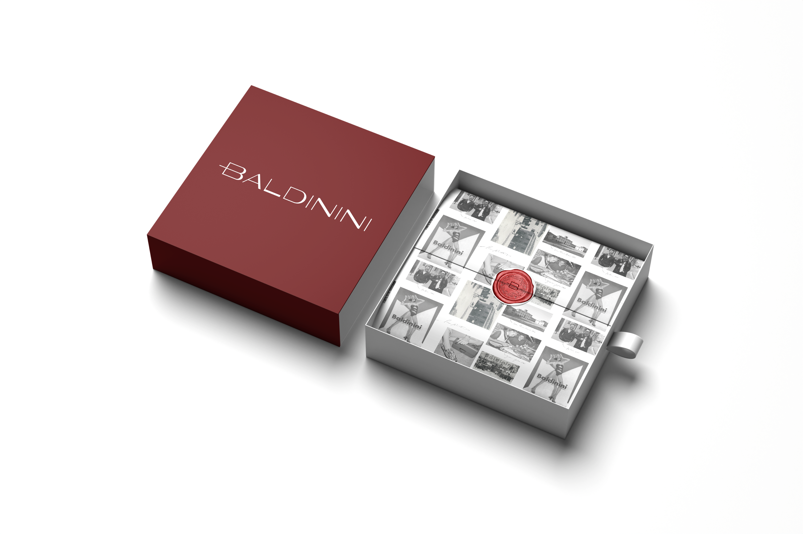
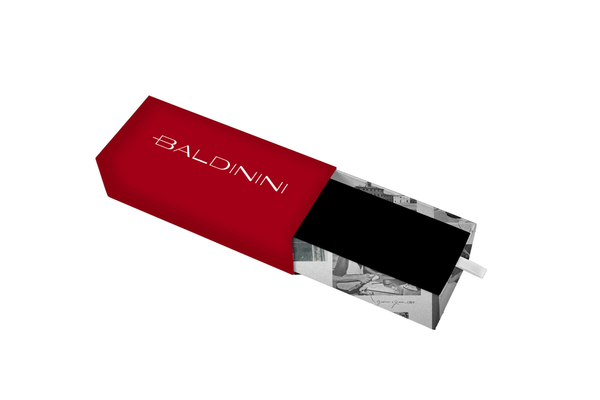
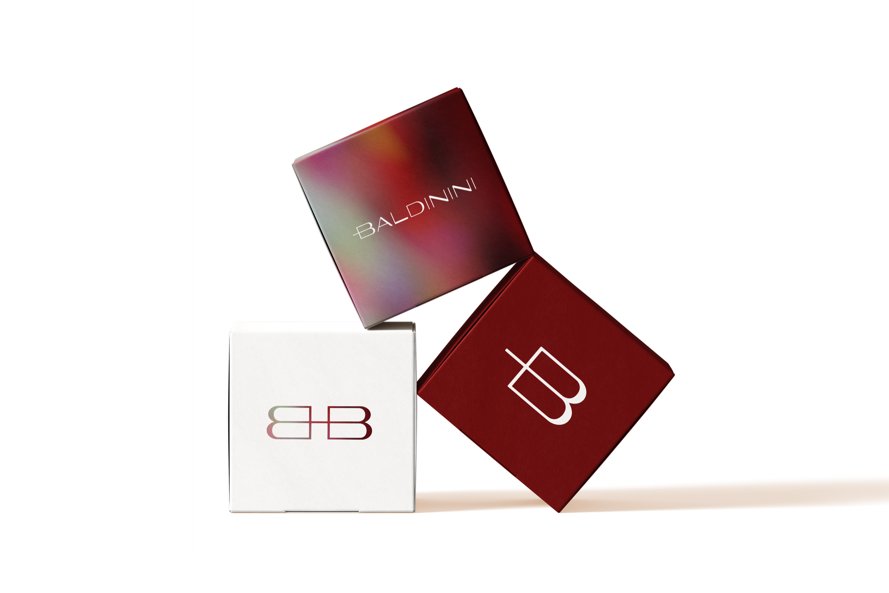
Box portafogli, custodia occhiali, scatola profumo
Approccio
L'unboxing experience è stata progettata come un percorso: ogni elemento è stato pensato per aggiungere valore senza aggiungere spreco. La cartolina inclusa nella scatola è realizzata in carta con semi da piantare — dopo la lettura, può essere interrata e germogliare. Il timbro ceralacca sigilla i pacchi con un'impronta sensoriale che ricorda l'artigianalità.
Il porta cartolina — incluso come gadget — è progettato per essere riutilizzato: le sue dimensioni accolgono una foto o una polaroid, trasformando un elemento di packaging in un oggetto da tenere. La stessa logica vale per il porta scontrino. Non si butta niente: si reinterpreta.
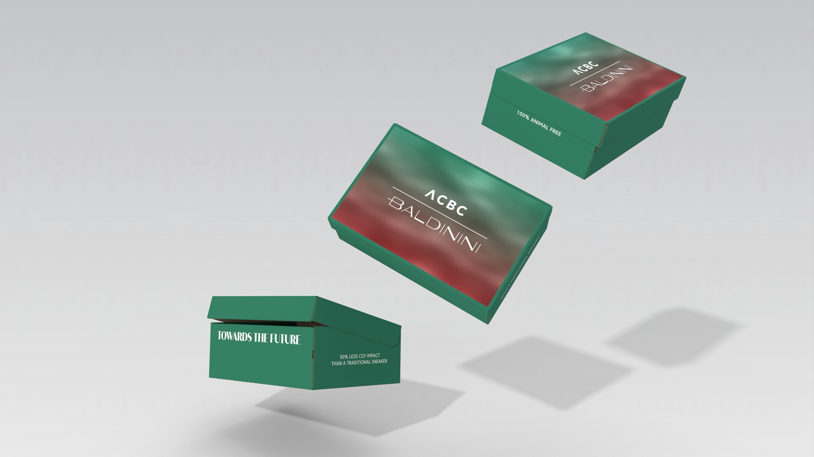
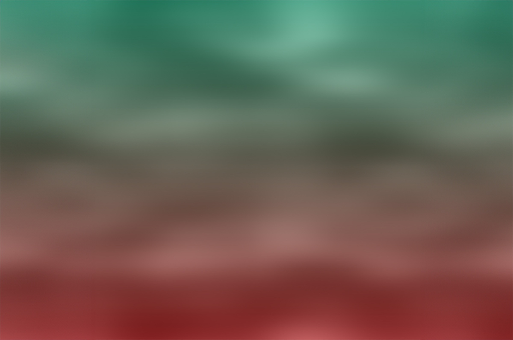
ACBC × Baldinini, scatola scarpe per la collaborazione
ACBC × Baldinini, animazione della scatola
Approccio
La collaborazione tra Baldinini e ACBC nasce dalla nuova brand identity e da un cambio di valori all'interno dell'azienda, tra cui l'attenzione alla sostenibilità. Come scritto nel brief: «Sostenibilità equivale a una scelta di vita etica, responsabile e coerente dove pensiero e azione diventano una cosa sola, abbracciando onestamente e consapevolmente un movimento ormai inarrestabile a cui vogliamo dare il nostro contributo attivo.»
ACBC è un partner tecnologico che produce materiali e componenti per calzature con un approccio modulare e a basso impatto. La scatola dedicata alla collezione ACBC × Baldinini adotta un gradiente che fonde le identità visive dei due brand, segnalando la natura speciale della collaborazione e il suo posizionamento sostenibile all'interno della gamma.
Set fotografico, Limited Edition natalizia
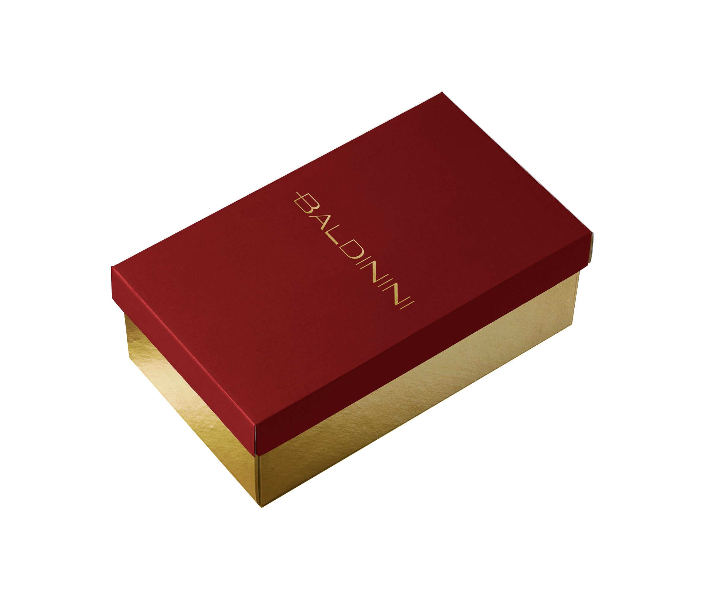
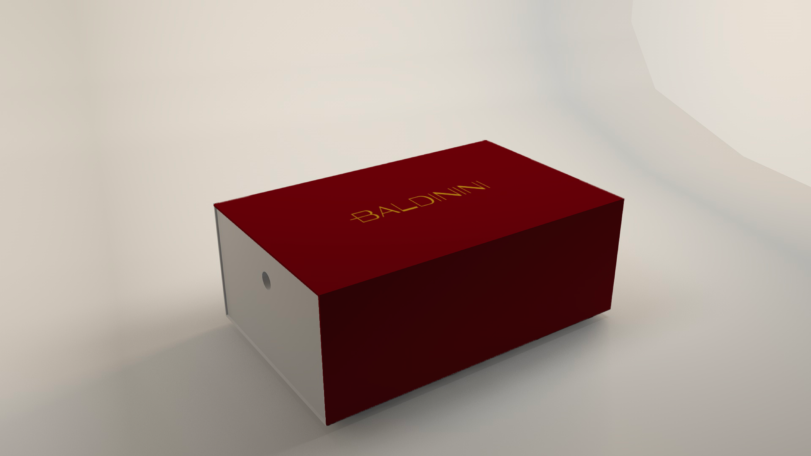
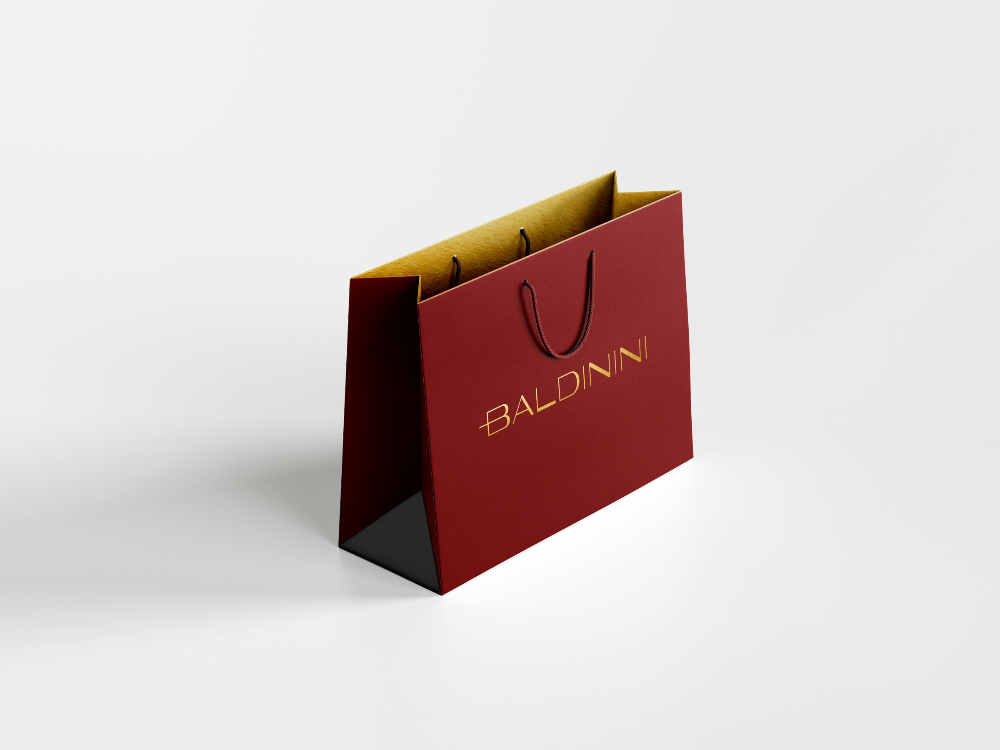
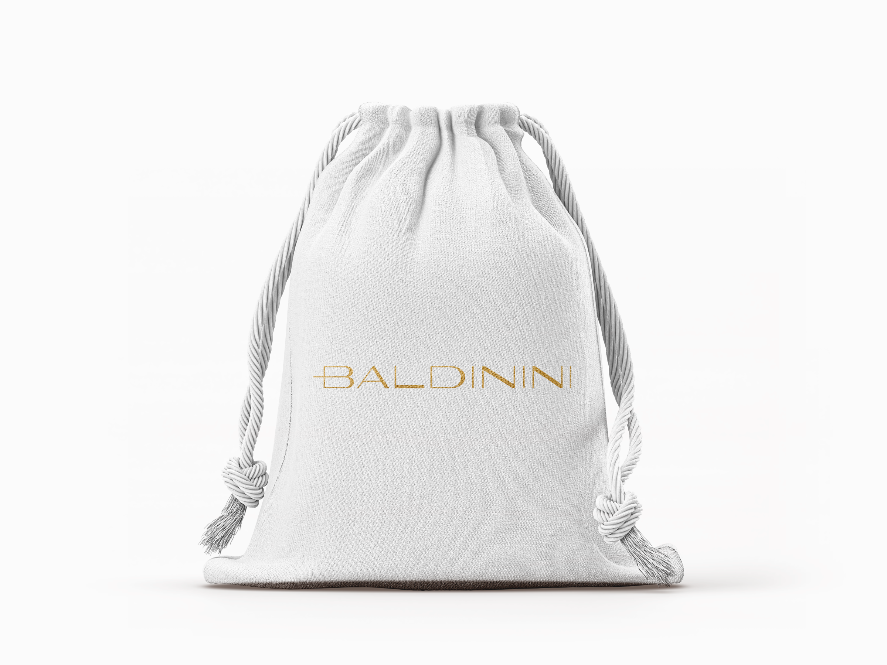
Scatola scarpe, interno, shopper e dust bag — Limited Edition
Nastro, cartolina e pallina natalizia — Limited Edition
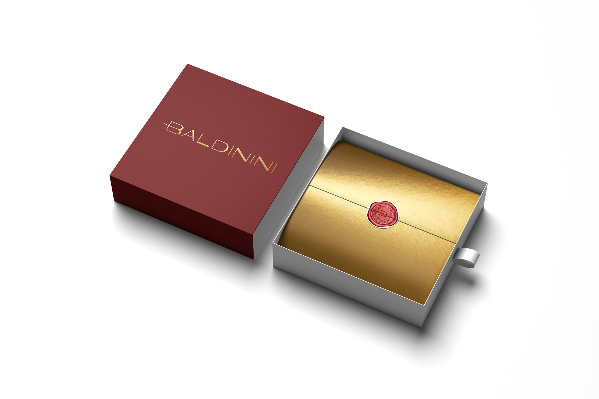
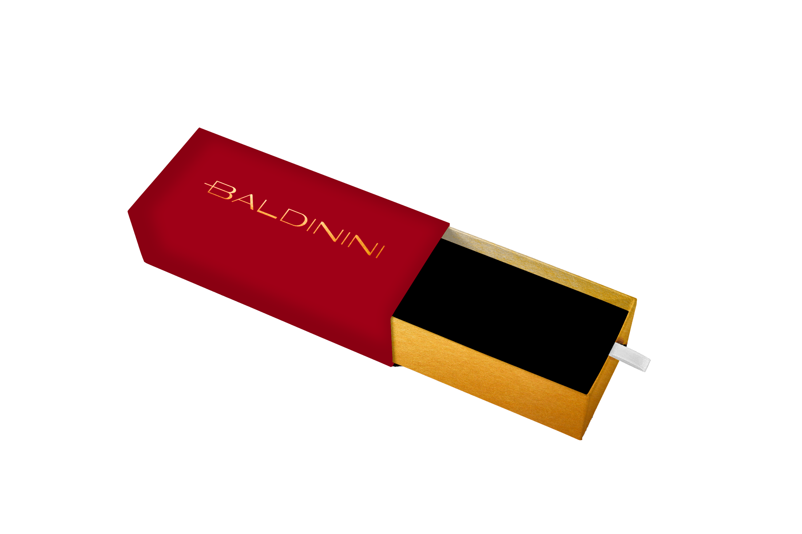
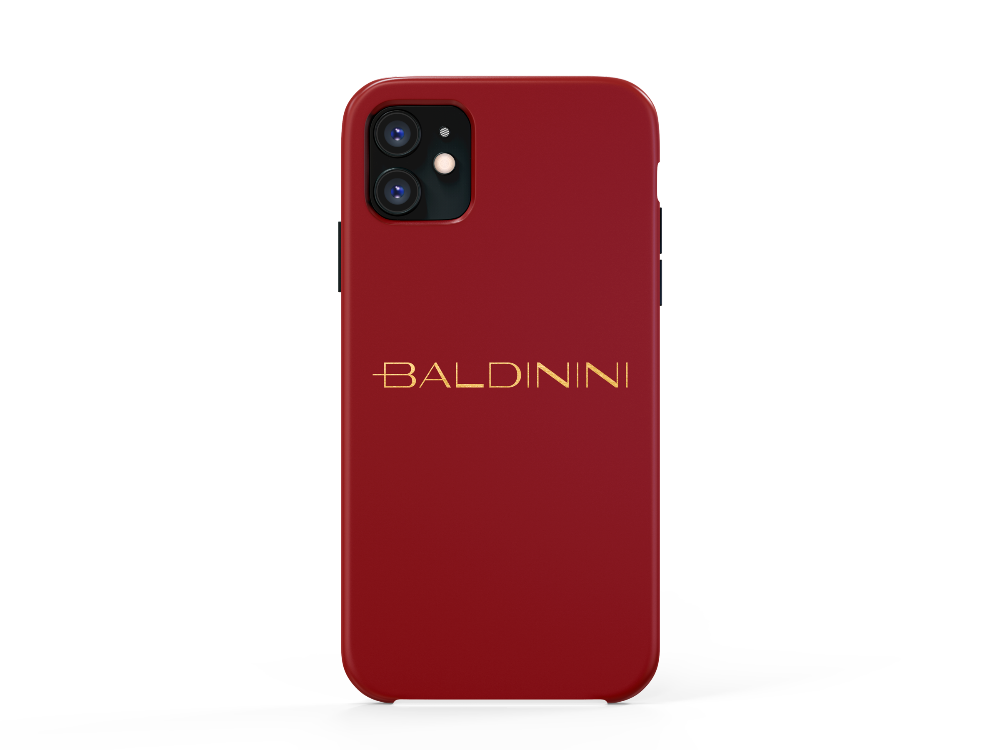
Box portafogli, custodia occhiali, cover iPhone e scatola profumo — Limited Edition
Unboxing experience Limited Edition, animazione
Approccio
La Limited Edition natalizia declina l'intera linea packaging in una versione speciale che mantiene la coerenza con il sistema standard, amplificandone il carattere. Il rosso Baldinini diventa dominante: dalla scatola scarpe allo shopper, dal dust bag al nastro, fino alla pallina di Natale — ogni elemento è progettato per funzionare sia come packaging che come oggetto da regalo.
La cartolina da piantare nella versione LE porta un messaggio stagionale, ma conserva la stessa funzione sostenibile dell'edizione standard: un gesto di cura che parte da un packaging.
Università
ITS Academy Machina Lonati
Gruppo
Andrea Ghirardi
Michele Sangiorgi
Sofia Delbono
Valentina Spezia
Mattia Arpini
Giordano Baronchelli
Docente
Roberto Della Rupe
Anno
2024